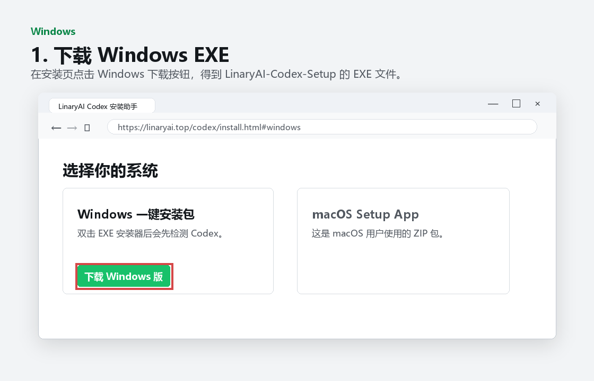
1. 下载 Windows 安装包
打开安装页后点击“下载 Windows 版”，浏览器会下载一个 EXE 文件。
打开安装器后会先检测本机 Codex。检测通过后输入一次 API Key，即可把 Codex 配置为使用 LinaryAI、安装插件包，并设置简体中文体验。
解压后双击 LinaryAI Codex Setup.app，输入 API Key 后写入本机配置。未签名版本首次打开可能需要系统放行。
快速视频教程
本地生成的短片演示会从下载、检测 Codex、输入 API Key、自动配置一路走到验证通过。视频不包含真实 API Key。
视频为本地生成的安装流程动画，用于快速说明操作顺序；如果从压缩包打开网页，请先完整解压整个文件夹，避免视频资源加载失败。
Windows 图文安装教程
Windows 版直接提供 EXE 安装包。用户只需要下载、双击、输入 LinaryAI API Key，安装器会自动处理 Codex 配置、插件包和简体中文设置。
以下图片为按当前 LinaryAI 安装器流程制作的界面示意图，用于说明点击顺序；正式发布前建议替换为 Windows Sandbox 或测试机里的真实截图。

打开安装页后点击“下载 Windows 版”，浏览器会下载一个 EXE 文件。
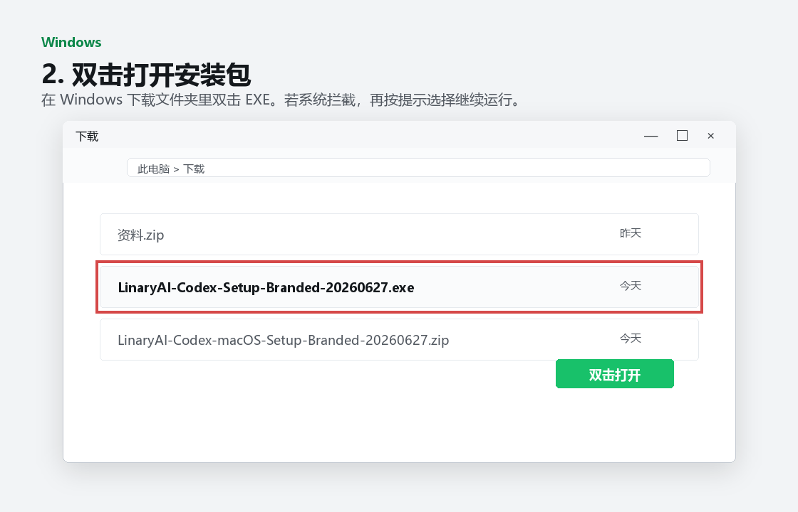
下载完成后双击安装包。如果出现 SmartScreen 提示，点击“更多信息”后选择“仍要运行”。
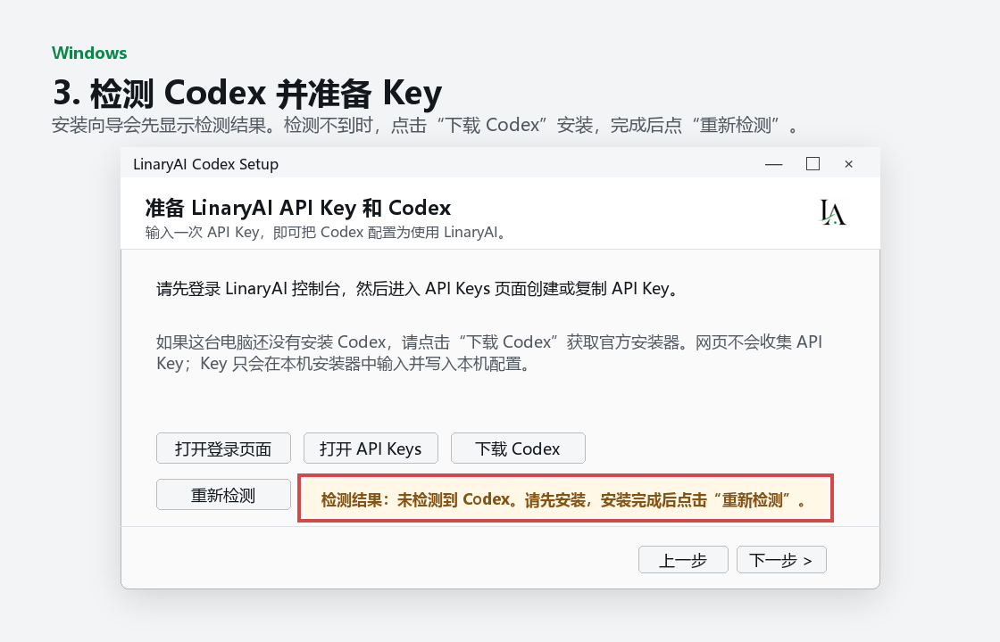
安装向导会显示 Codex 检测结果。检测不到时，点击“下载 Codex”，安装完成后再点“重新检测”。
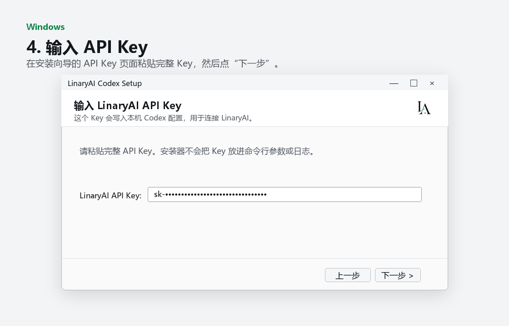
在安装向导的 API Key 页面粘贴完整 Key，然后点击“下一步”。不需要手动打开 Terminal。
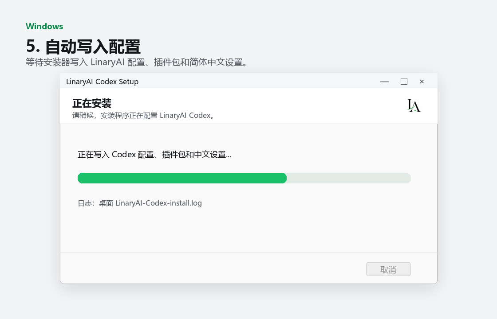
安装器会写入 LinaryAI API 配置、安装插件包，并设置 Codex 简体中文。
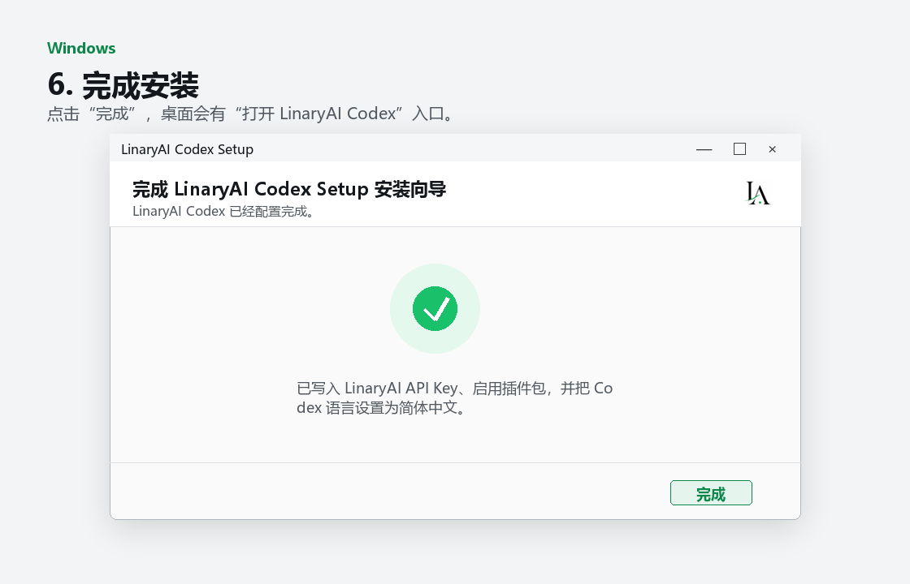
点击“完成”退出向导。桌面会生成“打开 LinaryAI Codex”入口，之后 Codex 会使用 LinaryAI 配置和中文体验。
如果 Windows 提示“不明发布者”，这是未购买商业代码签名证书时的常见系统提示。用户可点击“更多信息”，再选择“仍要运行”。
macOS 图文安装教程
macOS 版是压缩包形式，用户下载后解压，双击 LinaryAI Codex Setup.app。若电脑还没有 Codex，安装器会先提示打开官方 Codex 下载页；装好后再次运行 Setup App 输入 API Key。
以下图片为按当前 macOS Setup App 脚本流程制作的界面示意图，用于说明点击顺序；正式发布前建议替换为 macOS 测试机里的真实截图。
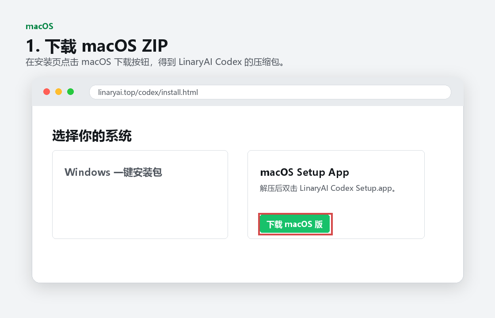
打开安装页后点击“下载 macOS 版”，下载 LinaryAI Codex 的 ZIP 压缩包。
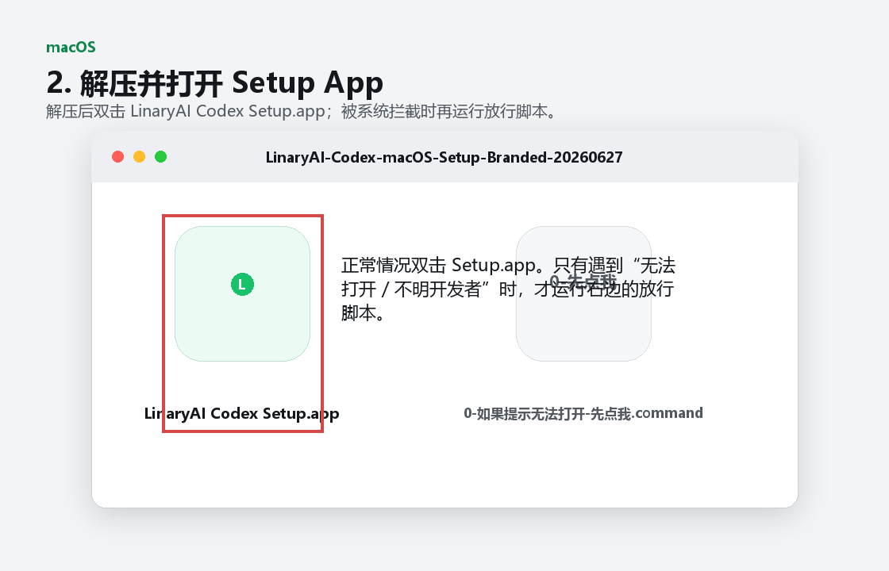
正常情况双击 LinaryAI Codex Setup.app。若系统拦截，再运行包内的放行脚本。
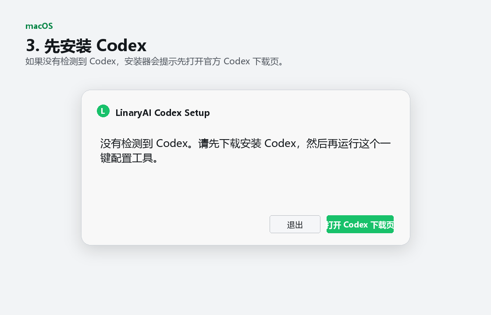
没有检测到 Codex 时，点击“打开 Codex 下载页”。安装完成后再回到 Setup App。
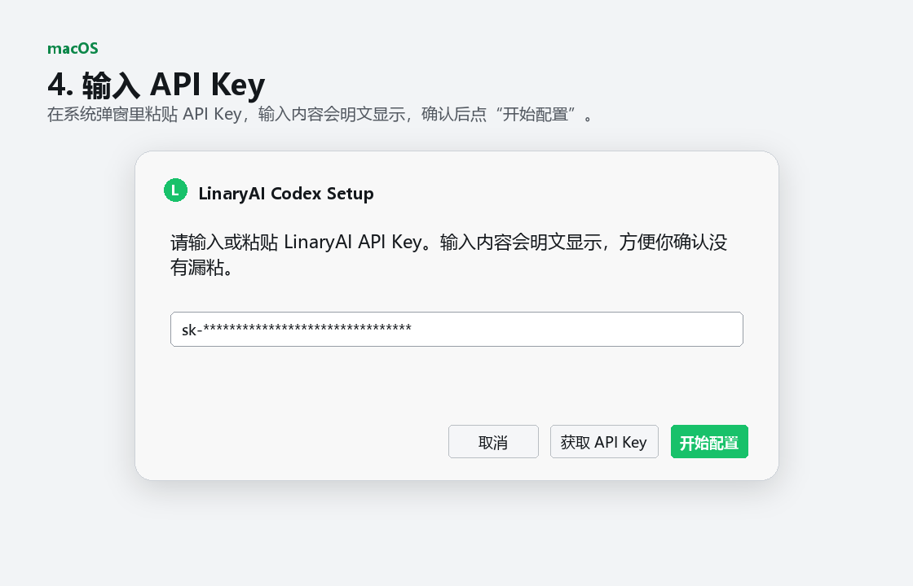
在系统弹窗里粘贴 API Key，输入内容会明文显示，确认无误后点击“开始配置”。
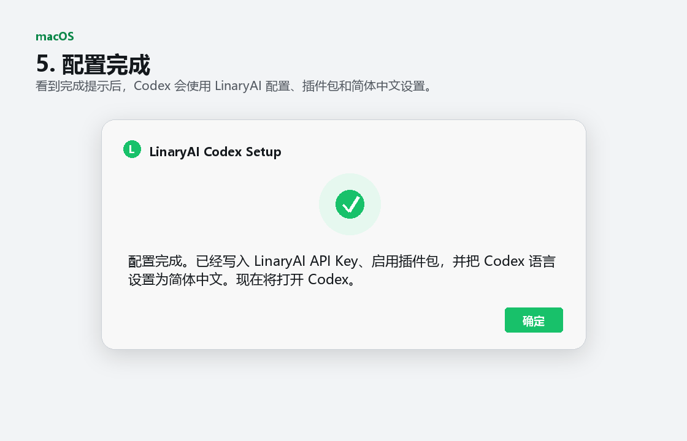
看到配置完成提示后，Codex 会使用 LinaryAI API、插件包和简体中文设置。
如果 macOS 提示“来自不明开发者”，先运行压缩包内的“0-如果提示无法打开-先点我.command”，或在系统设置的隐私与安全性里选择“仍要打开”。
安装页不收集 API Key。安装器会把 Key 写入本机 Codex 配置，不会把 Key 放进公开日志、命令行参数或网页表单。
当前安装包未做商业代码签名时，Windows 可能提示 SmartScreen。选择“更多信息”后点击“仍要运行”。正式分发建议购买代码签名证书。
先运行包内的“0-如果提示无法打开-先点我.command”，或在系统设置的隐私与安全性里选择“仍要打开”。正式分发建议 Apple Developer 签名和公证。
安装器会写入 localeOverride = "zh-CN" 并设置默认中文回答。配置完成后请完全退出 Codex 再重新打开一次。
Windows 日志在桌面 LinaryAI-Codex-install.log。macOS 日志在桌面 LinaryAI-Codex-setup.log。发给技术支持前请确认不要包含 API Key。